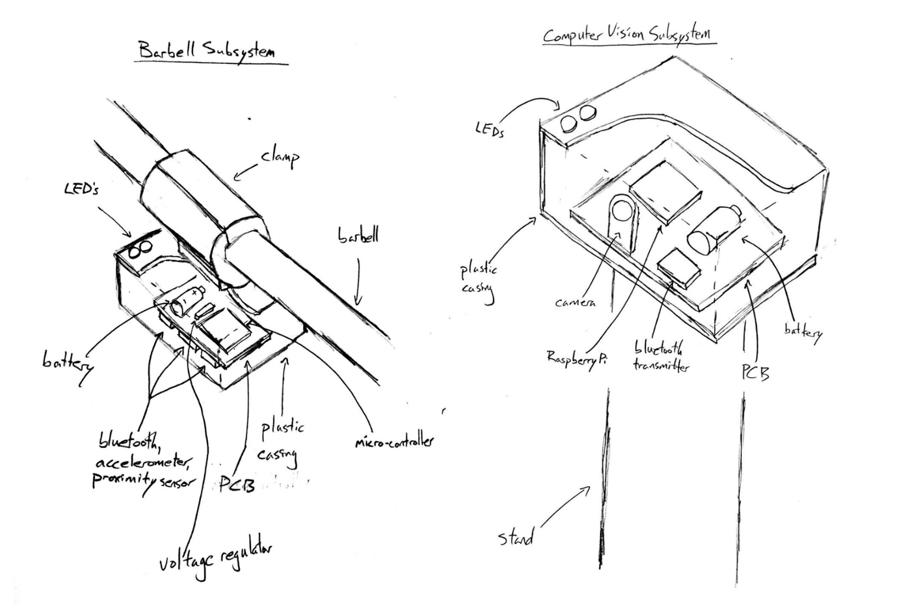
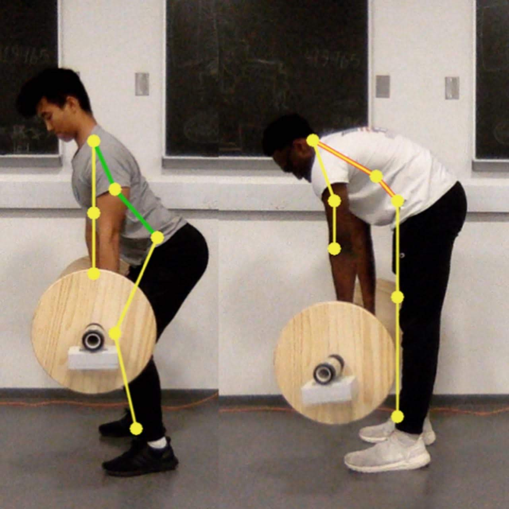
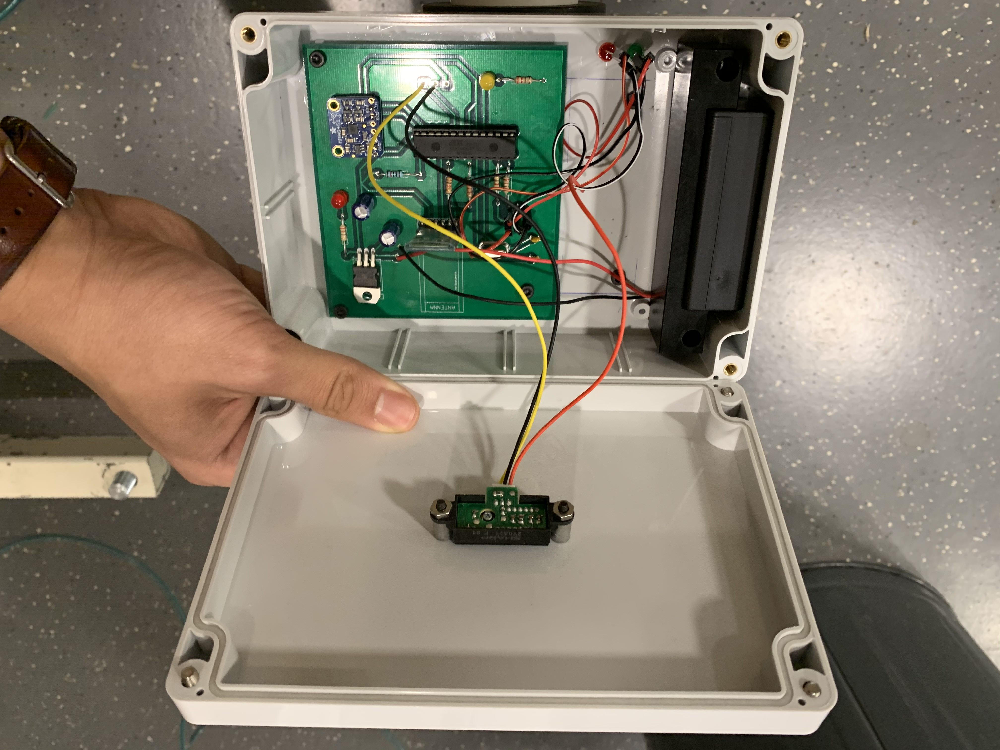
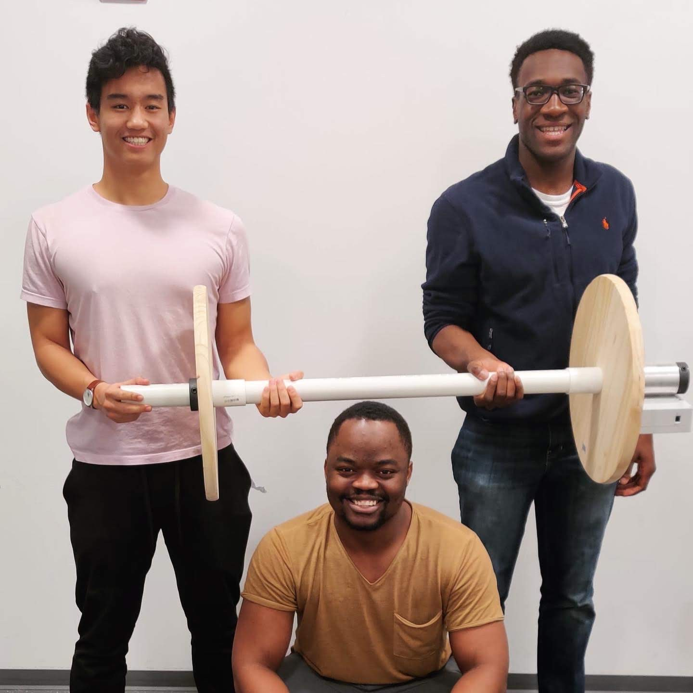

During the fall semester of my senior year, I took the senior design course for ECE as my capstone class. In this class, we were given full freedom on what project we would work on throughout the semester, as long as we incorporated both hardware and software into the final design. I decided to pitch an idea for a computer-vision workout coach, and pretty soon I had a group with 2 other classmates to work on this idea with.
We started the project by choosing a workout to analyze. We selected the deadlift because it is a workout that causes a lot of injury in the gym due to poor form. We wanted to create a solution to this problem.
After some initial sketches and throwing around ideas, my partners and I settled upon a design. We would create a barbell attachment that would connect to a computer via Bluetooth and relay information about in-progress lifts. This information would tell the computer what phase of the deadlift motion the user was currently in so that the computer could classify the images that it captured. The computer would then compare the user’s deadlift form to a professional’s via joint-angle analysis, meaning that it would read the angles of every major joint involved in the deadlift motion, and make sure that it fell within a certain range of the professional’s equivalent joint angles.

Throughout the project, I learned a lot of new skills. I learned how to design PCBs on Eagle, how to solder hardware, and how to have software and hardware communicate with one another. I also got experience with open source computer vision software because I used OpenCV and OpenPose to track the user’s movement.
Below are some photos of the final product. I’m very proud of my team for completing this project and creating a solution to a real-life problem. This project was a perfect representation of my undergraduate experience in ECE, having me combine hardware and software into a single project.
This project was intrinsically very software heavy with computer-vision, but we were required to implement hardware into it. If I were to move forward with this project, I would try to streamline it by removing the barbell attachment entirely and having the computer vision do all the deadlift analysis. Additionally, I would try to expand our software into other exercises or even sports.
That being said, I’m very happy with how my project turned out. It was difficult building this project entirely from scratch, and I’m very proud of my team for accomplishing it.


